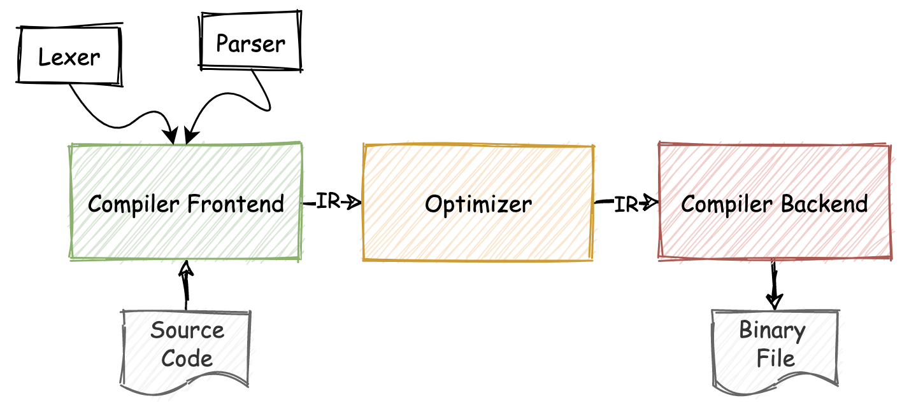
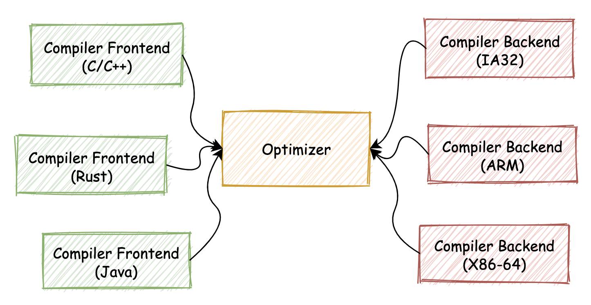
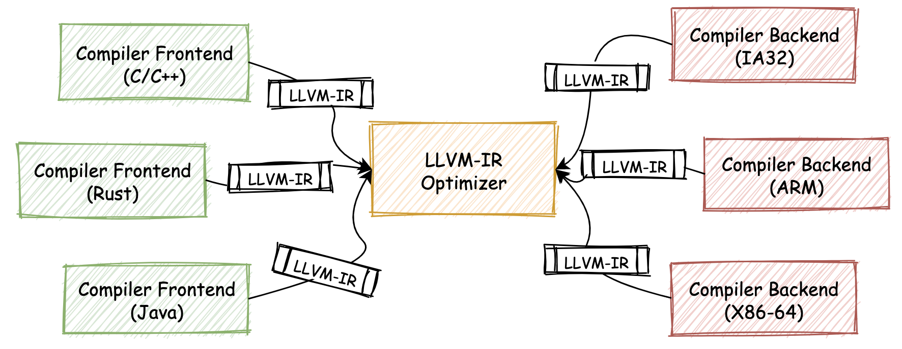
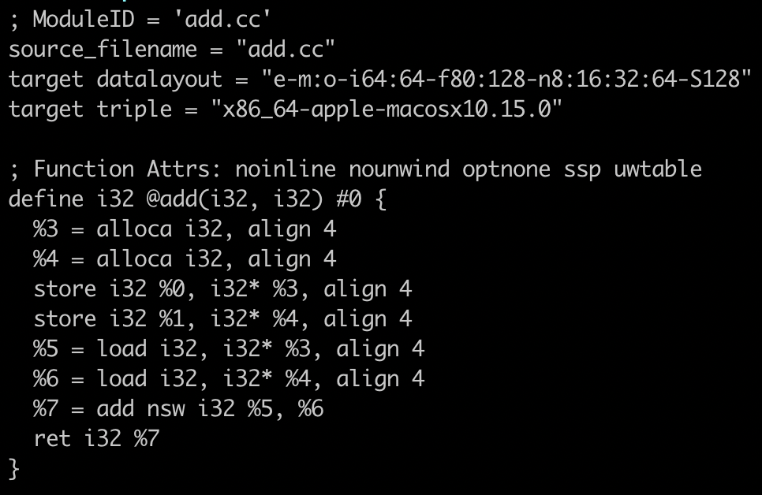
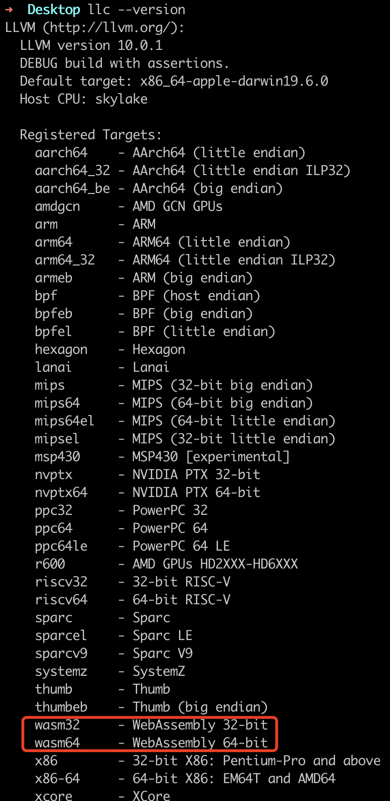

- 00 开篇词 我们为什么要了解 WebAssembly？.md.html
- 01 基础篇：学习此课程你需要了解哪些基础知识？.md.html
- 02 历史篇：为什么会有 WebAssembly 这样一门技术？.md.html
- 03 WebAssembly 是一门新的编程语言吗？.md.html
- 04 WebAssembly 模块的基本组成结构到底有多简单？.md.html
- 05 二进制编码：WebAssembly 微观世界的基本数据规则是什么？.md.html
- 06 WAT：如何让一个 WebAssembly 二进制模块的内容易于解读？.md.html
- 07 WASI：你听说过 WebAssembly 操作系统接口吗？.md.html
- 08 API：在 WebAssembly MVP 标准下你能做到哪些事？.md.html
- 09 WebAssembly 能够为 Web 前端框架赋能吗？.md.html
- 10 有哪些已经投入生产的 WebAssembly 真实案例？.md.html
- 11 WebAssembly 在物联网、多媒体与云技术方面有哪些创新实践？.md.html
- 12 有哪些优秀的 WebAssembly 编译器与运行时？.md.html
- 13 LLVM：如何将自定义的语言编译到 WebAssembly？.md.html
- 14 有哪些正在行进中的 WebAssembly Post-MVP 提案？.md.html
- 15 如何实现一个 WebAssembly 在线多媒体处理应用（一）？.md.html
- 16 如何实现一个 WebAssembly 在线多媒体处理应用（二）？.md.html
- 17 如何实现一个 WebAssembly 在线多媒体处理应用（三）？.md.html
- 18 如何进行 Wasm 应用的调试与分析？.md.html
- 19 如何应用 WASI 及其相关生态？.md.html
- 20 总结与答疑.md.html
- 结束语 WebAssembly，未来已来.md.html
- 捐赠
13 LLVM：如何将自定义的语言编译到 WebAssembly？
你好，我是于航。
应用 Wasm 的常见方式有几种类型，一种方式是通过 Web 浏览器提供的 JavaScript API 与 Web API ，来在 Web 应用中调用从 Wasm 模块中导出的函数。通过这种方式，我们可以充分利用 Wasm 的安全、高效及可移植性等优势。
另一种方式是通过 WASI 抽象系统调用接口，以便在 out-of-web 应用中使用 Wasm。这种使用方式与 Web 端大同小异，不过区别是可以借助底层运行时的能力，使得我们构建出的 Wasm 应用可以在 Web 浏览器外的 Native 环境中与操作系统打交道，并同样享受着 Wasm 本身所带来的安全、高效及可移植性。
而今天我们要介绍的另外一个 Wasm 的应用场景，则相对有些特殊。在大多数时候，我们都是将由诸如 C/C++ 以及 Rust 等语言编写的源代码，编译至 Wasm 字节码格式来使用。假设此时我们想要设计开发一款自定义的静态编程语言，那么怎样才能够方便快捷地为它的编译器添加一个能力，可以让编译器支持将 Wasm 作为编译目标呢？
关于这个问题，我们要先从传统的编译器链路开始说起。
传统编译器链路
对于传统的静态语言编译器来说，通常会采用较为流行的“三段式”链路结构。如下图所示，三段式结构分别对应着整个编译器链路中三个最为重要的组成部分：编译器前端（Compiler Frontend）、中间代码优化器（Optimizer），以及编译器后端（Compiler Backend）。

其中，“编译器前端”主要用于对输入的源代码进行诸如：词法、语法及语义分析，并生成其对应的 AST 抽象语法树，然后再根据 AST 来生成编译器内部的中间代码表示形式（IR）。
“中间代码优化器”则主要用于对这些 IR 代码进行一定的优化，以减小最后生成的二进制文件大小，并同时提高二进制代码的执行效率。
最后的“编译器后端”则负责进行与本地架构平台相关的代码生成工作，主要会根据优化后的 IR 代码来进行寄存器分配和调优之类的工作，并生成对应的机器码，存储在构建出的二进制可执行文件中。当然，流程的细节根据具体编程语言实现可能有所不同。
这种分段式编译器链路的优势在于，当我们想要为其添加多种源语言或目标编译平台的支持时，我们只需要重新编写其中的一个“分段”，便可以很轻松地复用整个编译链路中的其他部分。你可以形象地通过下图来感受这种关系。

比如当我们需要为编译器添加对另外一种源语言的支持时，我们只需要编写整个链路中的“编译器前端”部分即可。
但是满足这种“链路可分离”要求的一个前提，需要整个链路中用于对接各个阶段的“中间产物（IR）”，其存在形式必须是确定且不变的。编译器前端“输送”给中间优化器的 IR 代码格式，必须对所有为各种源语言设计的编译器前端保持一致。同理，从中间优化器输入到编译器后端的“中间产物”也是如此。
然而一个现实的情况是，实际上在 LLVM 出现之前，在各类编程语言的编译器链路中，并没有采用完全统一的中间产物表示形式（包括 IR、AST 等在内）。因此如果想要对编译器链路中的某一部分进行重用，这个过程仍然会十分困难。
这就造成了每当人们需要重新设计一款编程语言时，需要将整个编译器的编译链路重新编写。但实际上编译器针对不同编程语言变化的部分，可能就只有编译器前端而已。
编译器链路的分段模式还有另外的一个好处，它可以让编译器开发者的分工更加明确。比如擅长编译器前端的开发者，便可以更加专注地来实现编译器的前端逻辑，为编译器提供针对新源语言的前端，而不用去考虑优化以及编译器后端的逻辑（对于这部分功能可以直接复用已有的编译器链路）。这对于需要投入到商业化运作中的编译器来说，十分有利。
LLVM
LLVM 的全称为 “Low Level Virtual Machine”，翻译成中文即“低层次虚拟机”。最初的 LLVM 是 Chris Lattner 和 Vikram Adve 两人于2000年12月研发的一套综合性的软件工具链。在这套工具链中，包含了众多可用于开发者使用的相关组件，这些组件包括语言编译器、链接器、调试器等操作系统底层基础构建工具。
LLVM 在开发初期，被定位为一套具有良好接口定义的可重用组件库。这意味着，我们可以在所开发的第三方应用程序中，使用由 LLVM 提供的众多成熟高效的编译链路解决方案。大到“中间代码优化器”，小到代码生成器中的一个 “SelectionDAG 图生成组件”。这些方案以“组件化”的形式被管理在整套 LLVM 工具集中，可用于支持整个编译链路中各个阶段遇到的各种问题。
除此之外，LLVM 还提供了众多可以直接使用的命令行工具。通过这些工具（如 llvm-as、llc、llvm-dis 等等），我们也可以快速地对经由 LLVM 组件生成的中间表示产物，进行一定的变换和处理，这极大地方便了我们的应用开发和调试流程。
LLVM-IR
在整个 LLVM 工具链体系中，最重要的组成部分，便是其统一的，用于表示编译器中间状态的代码格式 —— LLVM-IR。在一个基于 LLVM 实现的编译器链路中，位于链路中间的优化器将会使用 LLVM-IR 来作为统一的输入与输出中间代码格式。
在整个 LLVM 项目中，扮演着重要角色的 LLVM-IR 被定义成为一类具有明确语义的轻量级、低层次的类汇编语言，其具有足够强的表现力和较好的可扩展性。通过更加贴近底层硬件的语义表达方式，它可以将高级语言的语法清晰地映射到其自身。不仅如此，通过语义中提供的明确变量类型信息，优化器还可以对 LLVM-IR 代码进行更进一步的深度优化。
因此，通过将 LLVM-IR 作为连接编译器链路各个组成部分的重要中间代码格式，开发者便可以以此为纽带，来利用整个 LLVM 工具集中的任何组件。唯一的要求是所接入的源语言需要被转换为 LLVM-IR 的格式（编译器前端）。同样，对任何新目标平台的支持，也都需要从 LLVM-IR 格式开始，再转换成具体的某种机器码（编译器后端）。
在 LLVM-IR 的基础上，我们上面所讲的分段式编译链路可以被描绘成下图的形式。

命令行：基于 LLVM 生成 Wasm 字节码
既然基于 LLVM-IR，我们可以方便快捷地为整个编译链路添加新的前端源语言，或者是后端目标平台。因此 Wasm 也同样可以作为一种目标平台，被实现在 LLVM 中（Wasm 作为一种 V-ISA，其实本身与 I386、X86-64 等架构平台没有太大的区别）。
无独有偶的是，在 LLVM 中，已经存在了可用于 Wasm 目标平台的编译器后端。接下来，我们将尝试把一段 C/C++ 代码通过 LLVM 转换为 Wasm 字节码。
这里为了能够完成整个编译流程，我们将使用到 LLVM 工具集中的一个 CLI 命令行工具 —— llc，以及用于将 C/C++ 源代码编译为 LLVM-IR 中间代码的编译器 Clang。Clang 是一个业界知名的，基于 LLVM 构建的编译器，可用于编译 C/C++ 以及 Objective-C 等语言代码。
首先，我们给出如下这段 C/C++ 代码。
// add.cc
extern "C" {
int add (int a, int b) {
return a + b;
}
}
接下来，我们通过下面这个命令，将上面的代码编译为 LLVM-IR 中间代码对应的文本格式。
clang -S -emit-llvm add.cc
其中我们通过指定 “-S” 与 “-emit-llvm” 两个参数，使 Clang 在编译源代码时生成对应的 LLVM-IR 文本格式。命令执行完毕后，我们可以得到一个名为 “add.ll” 的文件。通过文本编辑器打开这个文件，你可以看到如下截图所示的 LLVM-IR 内容。

关于 LLVM-IR 的具体内容，你对它有一个大致的概念即可。接下来，我们继续使用 “llc” 工具，来将上面这部分 LLVM-IR 中间代码转换为对应的 Wasm 字节码。
“llc” 是 LLVM 的静态编译器，它可以将输入的 LLVM-IR 代码编译到平台相关的机器码。我们可以通过命令 “llc –version” 来查看它所支持的编译目标平台。如下图所示，我们可以看到其支持名为 “wasm32” 与 “wasm64” 两种 Wasm 的目标平台，这里我们使用第一个 “wasm32”。

通过如下命令行，我们便可以将上述生成的 LLVM-IR 代码编译为最终的 Wasm 字节码。
llc add.ll -filetype=obj -mtriple=wasm32 -o add.wasm
组件库：Wasm 编译器后端
在上面这个小实践环节中，我们通过使用 LLVM 工具链提供的命令行工具，将基于 C/C++ 代码编写的函数 “add” 编译成了对应的 Wasm 字节码格式。
那相对的，既然 LLVM 中存在着命令行工具可以进行类似的转换，那么在代码层面，便也存在着相应的组件库，能够实现从 LLVM-IR 到 Wasm 字节码的转换过程。
在实际的编码过程中，你可以通过 “llvm::TargetRegistry::lookupTarget” 这个 API 来设置和使用 Wasm 对应的目标编译器后端，以编译中间的 LLVM-IR 格式代码。关于这部分内容，你可以参考 LLVM 的官方文档来查阅更多的细节信息。
总结
好了，讲到这，今天的内容也就基本结束了。最后我来给你总结一下。
在本节课中，我们主要介绍了传统“三段式”编译器链路的一些特点，即分段式的结构更易于编译链路中对各重要组件的复用。同时，“三段式”也能够让编译链路的扩展变得更加轻松。 LLVM 的出现，使分段式编译链路的优点被发挥利用到最大。
LLVM 是一套综合性的软件工具链。内部提供了一系列基于 LLVM-IR、可用于构建编译相关系统工具的各类组件，比如代码优化器、生成器等等。不仅如此，LLVM 还为我们提供了诸如 “llc” 等命令行工具，可用于方便地对 LLVM-IR 等格式进行转换和编译。
最后，LLVM 也同样整合了可用于编译 LLVM-IR 到 Wasm 字节码的编译器后端，因此这对于我们来说，只要能够将我们自定义的编程语言代码编译到 LLVM-IR，那么我们就可以直接利用 LLVM 已有的 Wasm 后端，来将这些 IR 编译到 Wasm 字节码格式。不仅如此，我们还能够直接复用 LLVM 已有的优化器组件，来优化我们的生成代码，进而简化整个编译器的开发工作。
课后思考
最后，我们来做一个思考题吧。
你知道在上面 “llc” 的帮助信息中，所支持平台 “wasm32” 与 “wasm64” 两者有什么区别吗？
今天的课程就结束了，希望可以帮助到你，也希望你在下方的留言区和我参与讨论，同时欢迎你把这节课分享给你的朋友或者同事，一起交流一下。
© 2019 - 2023 Liangliang Lee. Powered by gin and hexo-theme-book.